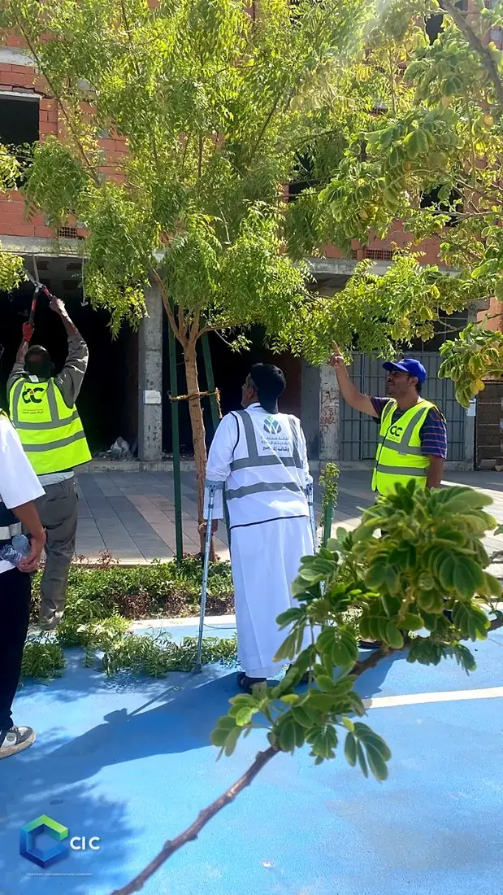

2026
2026Landscape & irrigation
Lemon Farm Project — Al-Ahsa
For the Ministry of Environment, Water and Agriculture: land grading, internal roads and planting and irrigation lines. In progress.
04 · General contracting · All regions of Saudi Arabia
Sustainable green in the heart of the city.
Green spaces built for the Kingdom's hot climate: we select the right trees, design water-saving irrigation networks and maintain them so they stay at their best all year.
2026For the Ministry of Environment, Water and Agriculture: land grading, internal roads and planting and irrigation lines. In progress.
 2024
2024Supply and planting of Neem, Glauca and Sidr trees; irrigation networks, valves and pump.
 2024
2024Maintenance, pruning and trimming around the Emirate building and Omar bin Al-Khattab Road.

2024Maintenance, trimming and pruning of trees.
We visit, listen to your requirements and study the drawings and real site conditions.
A detailed offer with items, quantities and timeline, with no vague line items.
Field crews under direct engineering supervision, with photo-documented progress reports.
Handover to specification, and follow-up until you are fully satisfied.
On our projects we used Neem, Glauca and Sidr trees, which tolerate heat and need little water.
Yes. We maintain and prune trees around the Madinah Region Emirate building and on Khalid Ibn Al-Walid Road.
Check a valid CR and VAT number, completed projects you can see, an itemised offer with quantities rather than a lump sum, and engineering supervision with regular reports. CIC is registered under CR 4650273835, VAT 312325975900003.
General contracting · All regions of Saudi Arabia
Tell us the project type and location, and we will arrange a site visit and a clear offer as soon as possible.